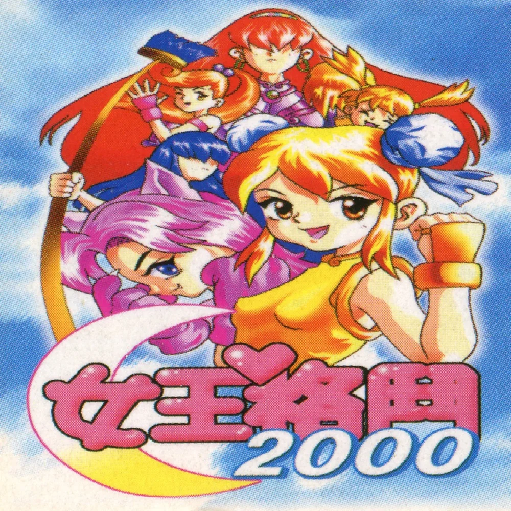

SCREENSHOT // 01
Queen Fighter 2000 es un juego de lucha bootleg sin licencia para la Game Boy Color, desarrollado por Vast Fame. A pesar de su nombre, fue lanzado en 2001. Este título destaca por incorporar un elenco compuesto casi en su totalidad por versiones femeninas de personajes icónicos de The King of Fighters.
memory
ARCHIVE NOTE:
Un curioso cruce entre hardware portátil, lucha 2D y cultura bootleg.